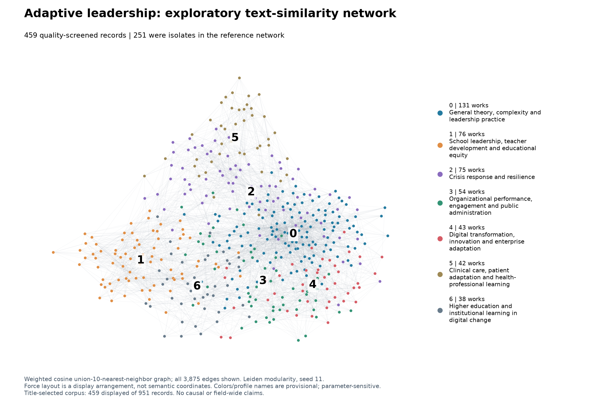
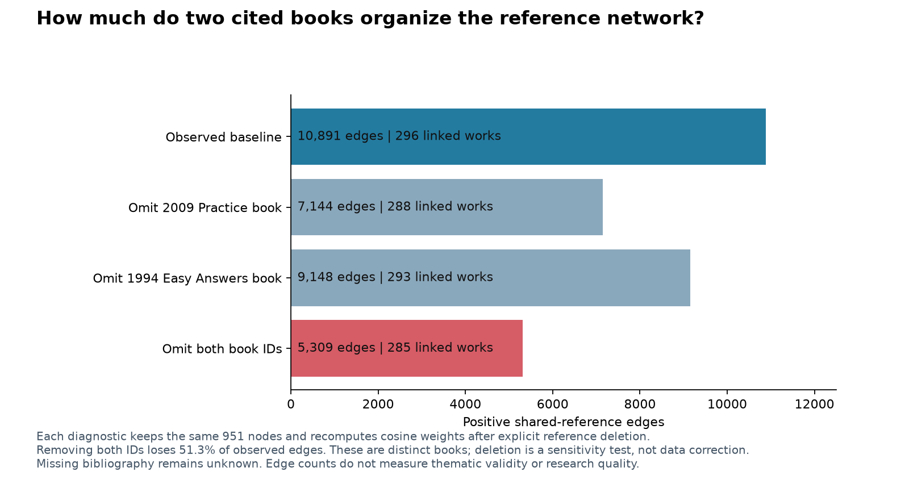

How do adaptive-leadership works group together?
Four follow-up analyses of the frozen 951-record selection · 20 October 2026
Lead finding: the most useful organization is a crosswalk between the problem being addressed, the intellectual framework, and the setting. The evidence does not support treating the original citation communities—or the new seven text clusters—as seven settled academic schools. School change, clinical care, crisis response, organizational performance and digital transformation recur, but they cut across different meanings of “adaptive leadership.”
For example, clinical studies describe patients and professionals doing adaptive work together; a workplace scale measures a leader’s flexible behaviour; a conceptual paper connects cognitive-style differences with collective learning. These can share words and references without measuring the same process.
What was actually examined
The population remains the same 951 provider records selected by a title phrase, not a census of all research on adaptation or leadership. The earlier full-snapshot scan scope comes from retained scan receipts and operator audit, not a new scan here. Mixed publication types, supplementary materials and possible versions remain separate records.
| Evidence layer | Coverage | What it can support |
|---|---|---|
| Independent source coding | 48 stratified, purposively selected records; two blinded agents; lead reconciliation | A source-grounded vocabulary and contrasts, not population prevalence |
| Text similarity | 459 eligible English title-plus-abstract records, including 251 prior reference isolates | An exploratory reading map for this eligible subset |
| Reference audit | All 951 records; 325 with observed references; baseline 296 connected | Dependence of observed coupling on two identified books |
| Targeted full texts | 6 of 8 requested works accessible | Mechanism and design distinctions, with overlapping samples explicitly identified |
There were 704 structurally valid available abstracts, 236 missing and 11 gapped. Structural validity is not source validity. The English text map additionally required at least 40 words, allowed publication types, no trailing ellipsis and source-quality screening. The known protein-abstract mismatch was excluded. Forty-eight flagged texts received full available-abstract inspection; 18 were excluded. Blind coding and a subsequent script audit identified two further language/boilerplate exclusions, producing 459. This was not exhaustive semantic verification of all abstracts or proof that the provider abstracts reproduce their complete published originals.
Actual model inference encoded 461 records; the final 459 vectors are a documented subset. The 724,510-character input total describes the 461-record encoding cache. Original candidate results and hashes are preserved separately. Of the 655 reference isolates, 465 had structurally valid abstracts and 251 entered the final text map. The remaining 492 inventory records have explicit exclusion reasons and no text-cluster assignment; they are not interpreted as thematically isolated.
1. Source coding: distinguish problem, framework and setting
Two fresh agents independently coded the same shuffled source-only packet without prior cluster labels or access to each other’s output. Each supplied four axes—problem/mechanism, framework, setting and design—with exact source excerpts and uncertainty. The lead compared all 48 pairs, retained both originals, and harmonized a small vocabulary after coding. This is AI-assisted appraisal; an independent human domain expert has not assessed it.
The descriptions were often compatible in meaning but differed in specificity. Seven records have explicit lead resolution notes, including generic adaptive principles versus a named framework, conceptual discussion versus unspecified empirical design, a chapter supplied with a whole-book description, and a robotics title paired with a human-team abstract. No kappa or percentage-agreement claim is made: the free-form labels were not a predefined reliability scale, and matching labels would not validate interpretations.
The matrix below describes 40 source-usable sample records. Six records with unavailable valid abstracts and two source-alignment quarantines are excluded from this matrix. Categories overlap; the counts describe records in this deliberately stratified sample, not independent studies or estimated shares of the 951 works. Instructional and conceptual documents remain clearly distinct from empirical studies in the coding ledger.
| Problem / mechanism | business and cross-sector organizations | education | health and care | military | public, community and environment | sport |
|---|---|---|---|---|---|---|
| care, coping and shared decisions | 0 | 0 | 4 | 0 | 0 | 0 |
| change, crisis and organizational adaptation | 5 | 1 | 0 | 2 | 4 | 0 |
| coordination, trust and performance | 3 | 1 | 1 | 2 | 0 | 2 |
| equity, ethics and collective voice | 1 | 4 | 0 | 0 | 3 | 0 |
| learning and capacity | 2 | 3 | 1 | 2 | 1 | 0 |
| measurement | 0 | 1 | 0 | 0 | 0 | 0 |
Useful contrasts include experiential learning in officer preparation, transformational learning in educational leader preparation, the Social Style Model in sales, and the Adaptive Leadership Framework for Chronic Illness in infertility and HIV work. An abstract saying only “adaptive leadership” does not establish a Heifetz or complexity-theory lineage. The coding ledger keeps these unspecified cases visible.
Examples: officer preparation; educational leader preparation; sales and the Social Style Model; infertility and chronic-illness adaptation.
2. Text similarity: a broader, provisional reading map
The pinned local MiniLM model encoded the complete available eligible abstract plus title. Long texts were divided into 240-wordpiece chunks, averaged and normalized; no wordpieces were omitted. Exact cosine similarities formed a positive weighted union 10-nearest-neighbour graph, partitioned using Leiden modularity with seed 11. All 459 nodes are connected in that constructed graph; this reflects nearest-neighbour construction and does not establish meaningful relatedness for every edge.
The primary seven groups below are labelled from all title lists and five full available abstracts per group: three nearest the centroid and two furthest from it. This is purposive representative-and-boundary appraisal of 35 abstracts, not validation of all 459 memberships.

| Provisional text profile | Records | Prior reference isolates | Boundary or contrary evidence |
|---|---|---|---|
| General theory, complexity and leadership practice | 131 | 71 | The two lowest-centroid records describe flocking and a 52-drone demonstration, including a supplementary-material record of the same work; they are not human organizational leadership studies. The group also contains sports and military work. |
| School leadership, teacher development and educational equity | 76 | 47 | Dual-language equity and a charter-school founder's autoethnography differ from central competency surveys. Higher-education/community learning titles also occur; school setting is not a shared causal theory. |
| Crisis response and resilience | 75 | 36 | A historical shipwreck survival account and a racial-equity essay are peripheral. COVID-19 vocabulary can join otherwise distinct settings and mechanisms. |
| Organizational performance, engagement and public administration | 54 | 36 | Peruvian migration policy and ethical social-work advocacy sit at the edge. A long theory-book description is near the centroid; text proximity does not imply empirical quality. |
| Digital transformation, innovation and enterprise adaptation | 43 | 25 | Indigenous women's leadership and inclusive social entrepreneurship broaden the group beyond technology. These are distinct ethical/framework commitments, not interchangeable digital-leadership models. |
| Clinical care, patient adaptation and health-professional learning | 42 | 11 | ECHO facilitator learning and forensic nursing extend beyond patient coping. Reviews explicitly limit efficacy conclusions; this is not evidence that all included practices work. |
| Higher education and institutional learning in digital change | 38 | 25 | School and Islamic-education records and public libraries cross the boundary. The AI-ready framework is conceptual; not a tested intervention. |
General theory, complexity and leadership practice
A broad mixed group of conceptual integration, leadership behaviours, training and organizational applications. It is not one intellectual school.
Representative source records: W4386405892, W7153555841, W1597546876. Boundary records: W3033075609, W6958004539.
School leadership, teacher development and educational equity
School-level leadership, teacher engagement, educational change and leader preparation dominate the title profile. The sampled abstracts span qualitative accounts and correlational surveys.
Representative source records: W4410707296, W7128260081, W7215505903. Boundary records: W3088410226, W107464115.
Crisis response and resilience
Pandemic and other disruptions connect leadership, coordination, trust and resilience across sectors.
Representative source records: W7220335579, W4413473072, W3173040929. Boundary records: W7203448894, W3108515835.
Organizational performance, engagement and public administration
Workplace performance, engagement and service-delivery questions recur across commercial and public organizations.
Representative source records: W3102325516, W6925215198, W4399871561. Boundary records: W3087348464, W7201866489.
Digital transformation, innovation and enterprise adaptation
Digital change, AI, innovation and organizational adaptation recur in central sources and titles.
Representative source records: W4415115871, W4404303367, W7216650848. Boundary records: W7215822495, W3215773750.
Clinical care, patient adaptation and health-professional learning
Clinical encounters, person-centred care, chronic illness and professional learning form a recognizable setting/mechanism intersection.
Representative source records: W4416599795, W3115426723, W2098575796. Boundary records: W3202791826, W7213248757.
Higher education and institutional learning in digital change
Higher-education leadership, online learning, institutional change and educational digital readiness recur.
Representative source records: W4417478233, W2950468915, W4408031094. Boundary records: W4412950939, W7115067632.
The number and boundaries of text groups are not stable enough for a definitive taxonomy. At k=5 there were 11 groups, at k=10 seven in the primary fit, and at k=15 six. Across the other four k=10 seeds, adjusted Rand agreement with the primary fit ranged from 0.561 to 0.910; k=5 and k=15 agreement was 0.588 and 0.634. These are sensitivity diagnostics, not accuracy scores.
On the same 208 eligible works that were originally reference-connected, text and frozen reference memberships had adjusted Rand agreement of 0.040. Rebuilding the citation partition on the eligible universe gave 0.036. The low agreement shows that text similarity and shared references organize these works differently; it does not identify a superior map or prove that the original clusters were wrong.
Residual record-level limitations are visible. The general-theory group contains a flocking paper and its supplementary-material record; repeated titles and possible versions also occur elsewhere. These were not silently merged or removed after viewing the results. Counts therefore refer to provider records, not deduplicated studies. A long book description near another centroid illustrates why centrality is not scholarly quality.
3. Reference audit: two books strongly shape the network
Targeted current metadata and primary publisher/catalogue evidence identify two distinct books: The Practice of Adaptive Leadership (2009; Heifetz, Grashow and Linsky; W1597546876) and Leadership Without Easy Answers (1994; Heifetz; W4207026187). They were not merged. The 2009 book occurs in 99 observed reference lists, including 68 of the original 75-record group 1; the 1994 book occurs in 68 lists, including 62 of the original 75-record group 2. These are within-selection counts, not global influence estimates.
Sources: publisher record for the 2009 book; ERIC record for the 1994 book. The acquisition date and raw responses are separate from the original frozen snapshot. Edition aliases beyond these two IDs were not exhaustively resolved.

| Diagnostic graph | Edges | Connected records | Agreement with baseline, fixed original 296 |
|---|---|---|---|
| Baseline | 10891 | 296 | 1.000 |
| Remove 2009 book | 7144 | 288 | 0.365 |
| Remove 1994 book | 9148 | 293 | 0.404 |
| Remove both books | 5309 | 285 | 0.203 |
Removing both cited IDs eliminates 5,582 of 10,891 edges (51.3%) and changes the partition substantially. The books occur in 150 distinct source records together. Cosine denominators were recomputed after removal. These diagnostic ablations show dependence on shared reference anchors; they do not measure causal intellectual influence, disprove substantive relationships, or justify selecting a more attractive partition. The baseline is retained.
4. Full texts: similar language, different mechanisms and evidence
Six accessible works received targeted reading of methods, relevant findings and limitations, with exact extracted-text locations in the evidence ledger. The conservation and educational-social-justice targets were inaccessible; their abstracts were not substituted. This is a bounded cross-case comparison, not a systematic review of intervention effectiveness.
Communication about life-sustaining therapy: insights from the Adaptive Leadership Framework
Design. Selected longitudinal clinical case; one mother/infant case from a larger 23-case study, with 23 mother/provider interviews over four phases.
Mechanism. Distinguishes technical treatment work from adaptive changes in expectations and relationships; provider expertise can displace family agency and avoid difficult conversations.
Interpretive limit. Work avoidance is contrary evidence: describing adaptive qualities did not ensure that the social worker exercised them. A selected case cannot estimate treatment effects.
Adaptive leadership in clinical encounters with women living with HIV
Design. Descriptive qualitative cross-sectional interviews with 22 women in North Carolina WIHS, July–October 2016.
Mechanism. Reciprocal care, communication, trust and patient self-advocacy connect provider support with patients' adaptive work.
Interpretive limit. Participant accounts do not establish causal efficacy. No participant feedback/member checking; geographically bounded sample.
Adaptive Challenges, Adaptive Work, and Adaptive Leadership Among Women Living With HIV in the Southern United States: Findings From a Qualitative Study
Design. Directed qualitative analysis of 22 interviews with women in North Carolina WIHS, July–October 2016.
Mechanism. Adaptive challenges require changes in values, attitudes, skills and behaviour alongside technical clinical care; patient-provider co-creation is emphasized.
Interpretive limit. Same interview-study family as the companion HIV article is strongly supported. Do not count it as an independent replication.
Adaptive leadership Competencies for hybrid work teams in the South African banking sector
Design. Qualitative purposive interviews with 20 managers across five South African banks; 80% top management.
Mechanism. Hybrid-work adaptation joins listening, feedback, trust and delegation with organizational support, ICT and performance-management changes.
Interpretive limit. Managers' perceptions are not representative workforce estimates or a causal intervention evaluation.
Advancing Adaptive Leadership Through Adaption‐Innovation Theory: Enhancements to The Holding Environment
Design. Conceptual integration of Adaption–Innovation theory with adaptive leadership.
Mechanism. Proposes that cognitive-style diversity shapes the holding environment and productive disequilibrium needed for social learning.
Interpretive limit. Individual problem-solving style and group leadership process are different constructs. The proposed integration explicitly needs empirical exploration.
Development and validation of the adaptive leadership behavior scale (ALBS)
Design. Three cross-sectional scale-validation studies: 201 followers, 311 followers and 155 leader-follower dyads.
Mechanism. Operationalizes leader flexibility through situational perception, behavioural repertoire, balancing demands and appropriate application. Four facets support a one-factor scale in these samples.
Interpretive limit. Psychometric and correlational evidence is not causal validation of adaptive leadership. Overall perceived employee-effectiveness association was not significant; the time-together analysis was supplementary. Subjective ratings and culture/context limits remain.
Do not double-count the HIV evidence. The two HIV articles have the same recruitment context, 22 participants, interview period, interviewer, mean age and IRB identifier. This strongly supports a common interview-study family. They offer distinct analyses of a shared sample, not two independent replications; participant-level linkage was not available.
The cross-case comparison suggests a useful research distinction: collective adaptive work (learning and revising expectations, practices or relationships), leader behavioural flexibility (perceiving demands and selecting behaviours), and conditions enabling learning (trust, support, delegation and cognitive diversity). These are an interpretive crosswalk from selected sources, not mutually exclusive schools or newly validated mechanisms. Trust appears in clinical and hybrid-work accounts, but the actors, outcomes and study designs differ. The clinical work-avoidance case and the scale paper’s null overall employee-effectiveness finding prevent a uniformly positive effectiveness story.
Audit trail and review status
The versioned protocol preceded substantial analysis; v2 documents the two post hoc quality exclusions. V1 numerical artifacts remain archived. The prior study’s seed, threshold and article-only checks were not presented as new followups. New checks covered actual encoding, text graph construction, seed/neighbour sensitivity, fixed-universe comparison and reference ablations. The acquired-text byte-identity receipt explains the acquisition script’s LF-versus-CRLF hash convention; all six normalized contents match their original acquisition hashes, and appraisal binds the exact saved file bytes. No source content was changed.
Execution used native Codex scientific-lead orchestration, two independent blinded coding agents and separate methods/statistics reviewers. It was not a controller-managed MCP research session, and no enforced controller access, completion gate or controller-qualified completion is claimed. Independent human expert assessment: not assessed. Candidate 1 received separate methods/source and statistical/reproducibility review, with no unresolved material objections; 87 statistical checks passed. Reviews bind the archived candidate; this final report changes only this review-status sentence. Human expert assessment remains not assessed.
Deliverables: 951-record mapping CSV; coding decisions and both source-backed code sets; matrix with contributing IDs; text profiles and boundary sources; full-text evidence locations and sample overlap; reference diagnostics; versioned numerical hashes.
The defensible outcome is a navigable, source-supported map of different questions and uses of adaptive leadership, with several recognizable settings and cross-cutting mechanisms. It remains bounded by title selection, provider metadata, language and text availability, mixed record types, parameter-sensitive clustering, source overlap and the small purposive appraisal sample.